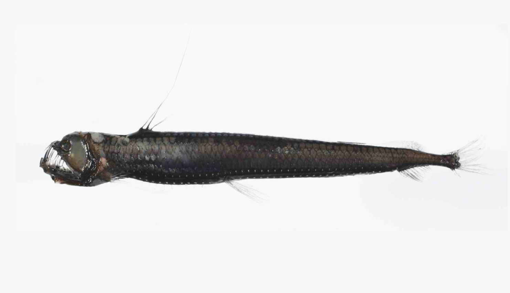
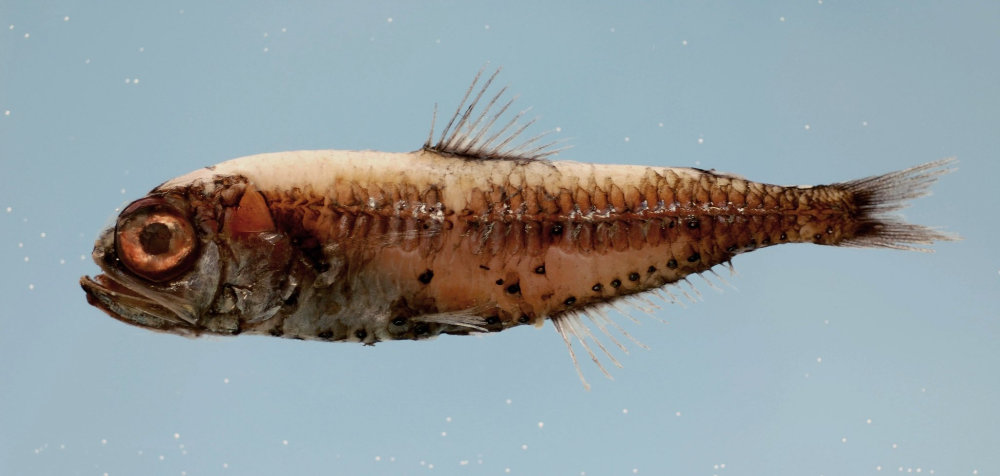

Mesopelagic — “Twilight Zone” (200–1,000 m)
Dimly lit and rapidly cooling, this zone is home to countless creatures adapted to near darkness. Many have bioluminescent organs used for camouflage or communication. Every night, billions of fish migrate upward to feed and return by day—forming the largest daily movement of life on Earth.
Pressure: like 20–100 cars stacked.
History: 1934 Bathysphere reached ~923 m.
Species in this Zone

